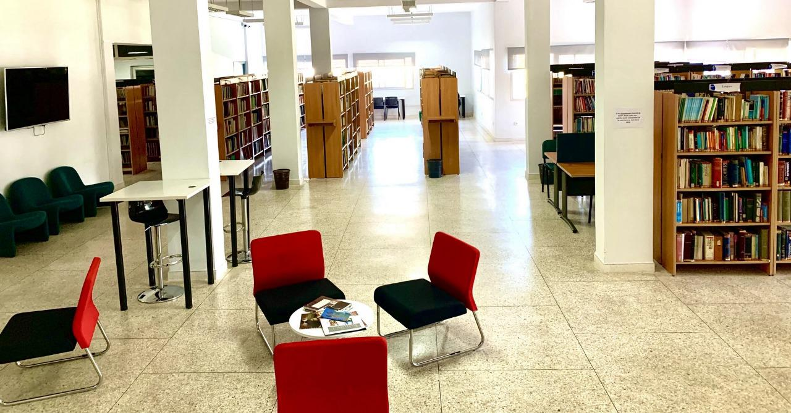
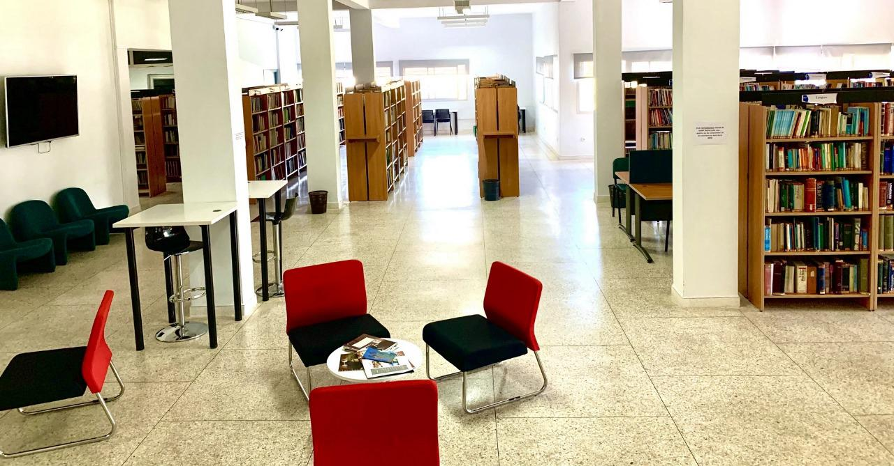

Service Stage
Bienvenue à la Bibliothèque Académique de l'ESI, un espace dédié à l’apprentissage, la recherche et l’enrichissement académique.
 

Les stages étudiants à l’ESI
Au cours de votre parcours à l’ESI, vous serez amenés à effectuer plusieurs stages qui vous permettront de découvrir le monde professionnel, d’appliquer vos connaissances sur le terrain, et de développer de nouvelles compétences.
Le stage de première année
Dès la fin de la première année, les étudiants réalisent un stage d’observation. Il s’agit d’un premier contact avec le milieu professionnel, généralement dans une entreprise ou une administration liée à l’informatique.
L’objectif principal de ce stage est de mieux comprendre le fonctionnement d’une structure professionnelle, son organisation, et les rôles des différents acteurs du secteur.
Ce stage se termine par la rédaction d’un rapport de stage, qui doit présenter l’entreprise, décrire les activités observées, et faire un retour sur les enseignements tirés de cette expérience.
Exemples de rapports
Pour vous aider à rédiger votre propre rapport, nous mettons à votre disposition quelques exemples de rapports de stages d’anciens étudiants. Cesmodèles peuvent vous inspirer dans la structure, la mise en forme, ou le style d’écriture à adopter